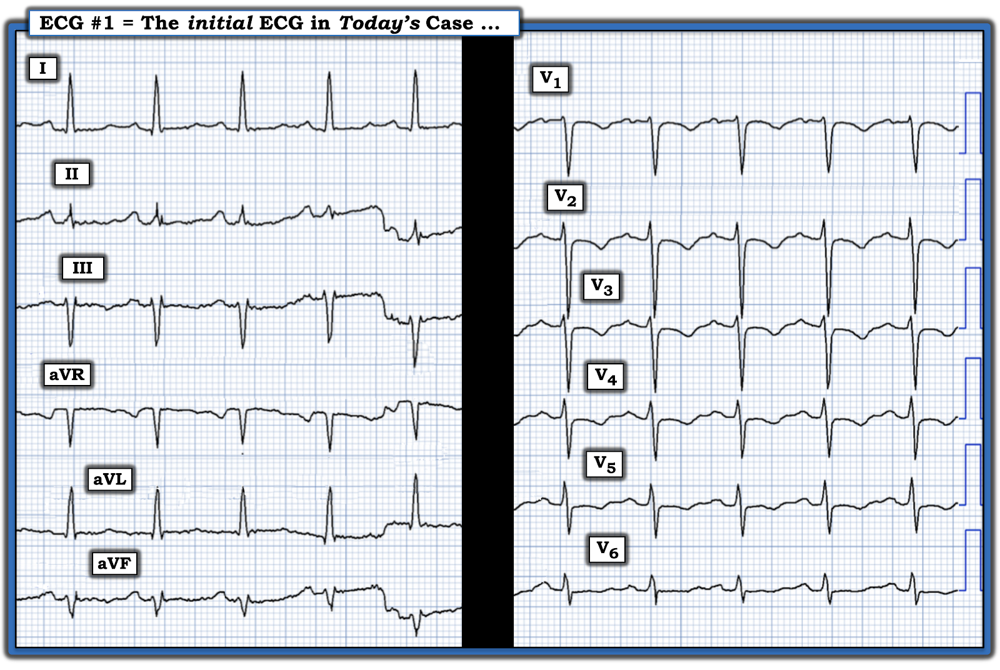
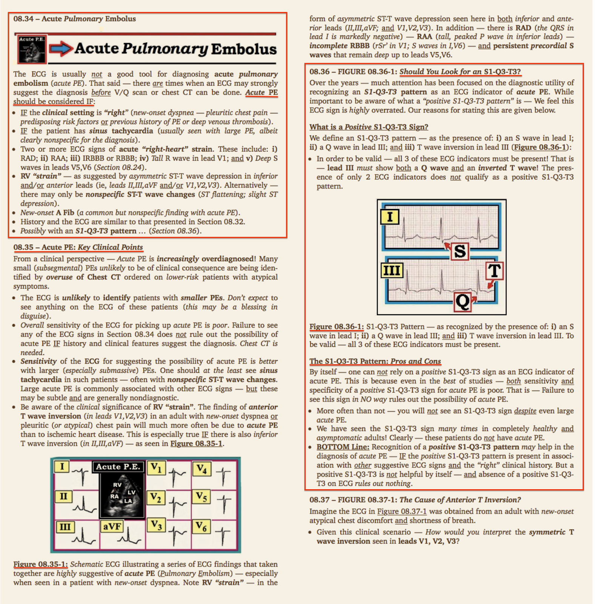
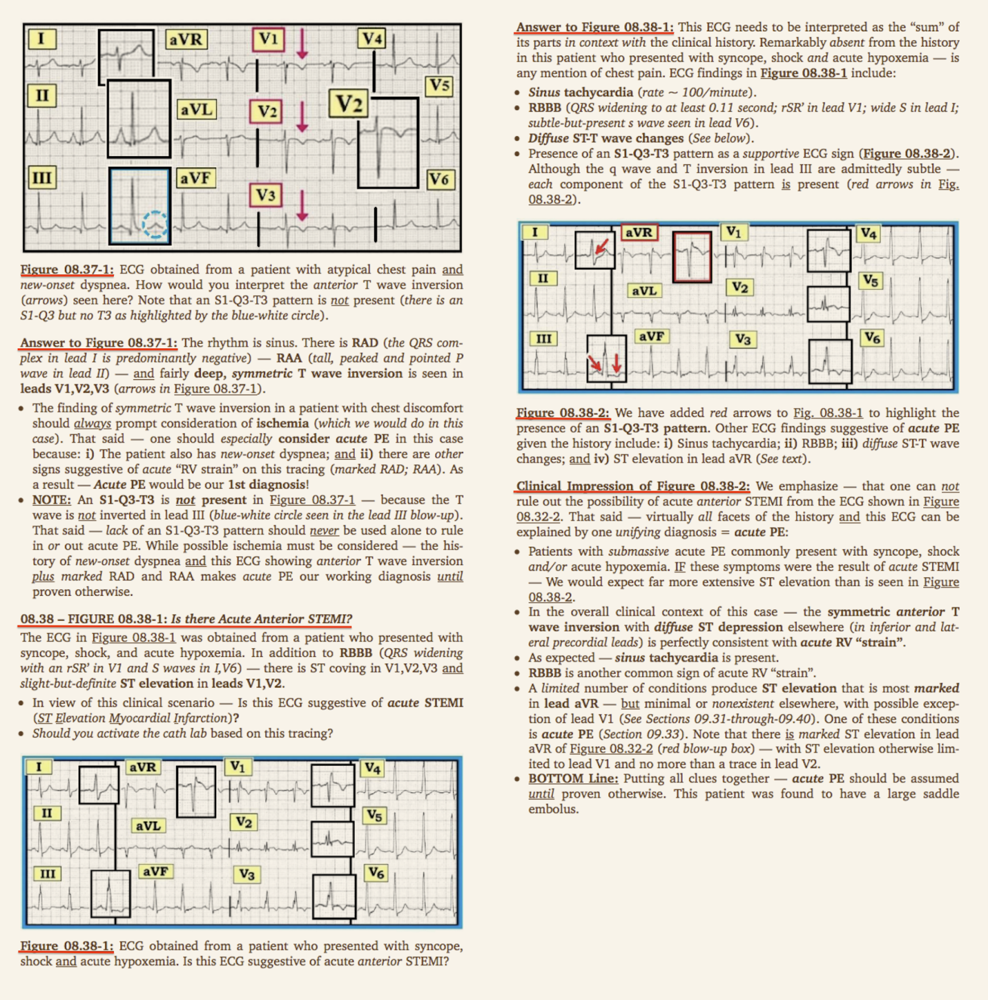
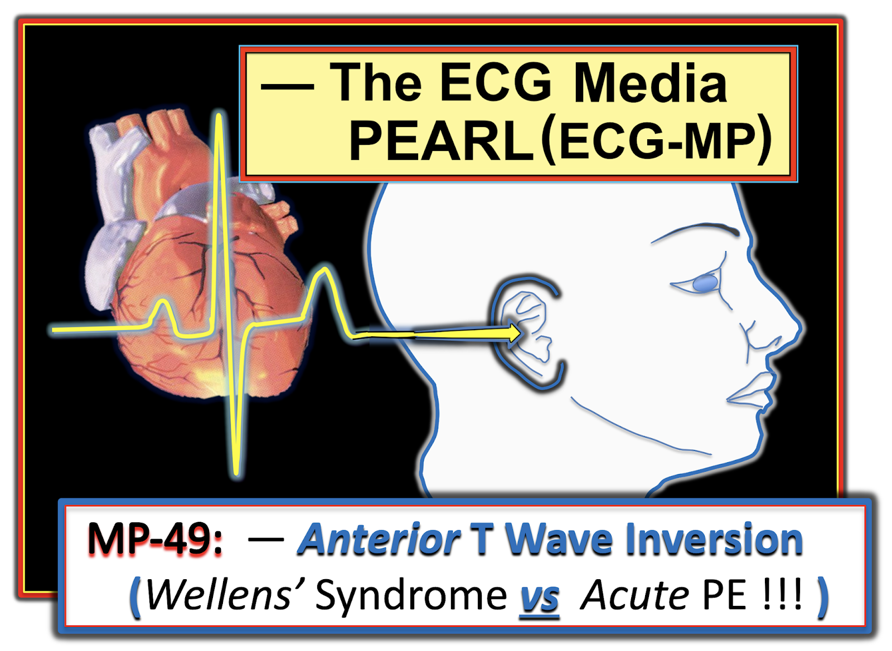

ECG Blog #435 — Chụp mạch vành có cho thấy thiếu máu cục bộ cấp không?
Điện tâm đồ ở Hình 1 — được ghi từ một phụ nữ trung niên có nhịp tim nhanh theo tư thế và vã mồ hôi khi đổi tư thế từ nằm ngửa sang ngồi. Mặc dù CP (Đau Ngực — Chest Pain) không phải là triệu chứng nổi bật — ACS (hội chứng vành cấp — Acute Coronary Syndrome) đã bị nghi ngờ dựa vào sóng T đảo ngược ở các chuyển đạo trước tim thấy trên điện tâm đồ này.
CÂU HỎI:
- BẠN sẽ diễn giải điện tâm đồ ở Hình 1 như thế nào?
- Bạn có đồng ý với chẩn đoán ACS không?
- TẠI SAO — hoặc Tại sao không?


SUY NGHĨ CỦA TÔI về điện tâm đồ ở Hình 1:
Nhịp là nhịp nhanh xoang với tần số ~105/phút (tức là, Khoảng R-R đều — và dài chưa tới 3 ô lớn). Khoảng PR bình thường. Phức bộ QRS hẹp — nhưng QTc có vẻ kéo dài (mặc dù điều này khó đánh giá hơn do nhịp tim nhanh). Không lớn buồng tim. Có sóng q vách nhỏ, hẹp (và bình thường) ở chuyển đạo I và aVL.
Các dấu hiệu điện tâm đồ đáng chú ý khác gồm:
- Có hình ảnh rSr' ở chuyển đạo III và aVF — nhưng không có ở chuyển đạo bên phải V1. Mặc dù hình ảnh rSr' ở chuyển đạo III hay aVF chủ yếu là một dấu hiệu mang tính mô tả — ý nghĩa tiềm tàng của hình ảnh này trong ca hôm nay là hoạt động điện hướng phải ở phần cuối này (tạo nên sóng r' ở các chuyển đạo dọc/hướng phải này) đôi khi đóng vai trò như một chỉ dấu thay thế cho hình ảnh IRBBB (blốc nhánh phải không hoàn toàn — Incomplete Right Bundle Branch Block).
- Có tăng tiến sóng R kém — với vùng chuyển tiếp (nơi sóng R trở nên cao hơn độ sâu của sóng S) bị chậm tới tận giữa chuyển đạo V5 và V6.
- Sóng S tồn tại dai dẳng ở các chuyển đạo trước tim cho tới tận chuyển đạo V6.
Về các dấu hiệu ST-T:
- Dấu hiệu điện tâm đồ nổi bật nhất ở Hình 1 — là sóng T đảo ngược khá sâu và đối xứng, bắt đầu từ chuyển đạo V1 — và kéo dài tới tận chuyển đạo V5.
- ST-T dẹt không đặc hiệu thấy ở hầu hết các chuyển đạo còn lại.
NHẬN ĐỊNH:
Mặc dù Bệnh sử trong ca hôm nay không đặc biệt gợi ý ACS (tức là, không hề nhắc tới CP) — bệnh sử này cũng không gợi ý bất kỳ chẩn đoán cụ thể nào khác. Dù vậy — điện tâm đồ ở Hình 1 nên khiến ta cân nhắc những khả năng sau:
- Sóng T đảo ngược đối xứng ở các chuyển đạo trước tim trên điện tâm đồ #1 có thể là dấu hiệu của bệnh mạch vành, có thể kèm thiếu máu cục bộ cấp. Và theo ECG Blog #350 — đây có thể là Hội chứng Wellens NẾU sóng T đảo ngược ở các chuyển đạo trước tim này là mới xuất hiện và xảy ra ở một bệnh nhân ban đầu có điện tâm đồ bình thường, rồi sau đó có một cơn CP thoáng qua đã hết vào thời điểm ghi điện tâm đồ có sóng T đảo ngược ở các chuyển đạo trước tim này.
- ĐIỂM THEN CHỐT (PEARL) #1: Trước khi quy sóng T đảo ngược ở các chuyển đạo trước tim thấy trên điện tâm đồ #1 cho hội chứng Wellens — điều cốt yếu là phải hỏi xem bệnh nhân CÓ từng có một cơn CP trước đó mà nay đã hết vào thời điểm thấy sóng T đảo ngược hay không.
- Một khả năng khác — sóng T đảo ngược đối xứng ở các chuyển đạo trước tim trên điện tâm đồ #1 có thể là dấu hiệu của bệnh cơ tim Takotsubo — đặc biệt khi bệnh sử ghi nhận tình trạng mất ổn định huyết động — cùng với biểu hiện có vẻ là QTc kéo dài (Xem ECG Blog #277).
- Thêm một khả năng khác cần cân nhắc — Các bất thường ST-T lan tỏa (bao gồm sóng T đảo ngược) như thấy trên điện tâm đồ #1 có thể là hậu quả của một bệnh lý ngoài tim — bao gồm rối loạn chuyển hóa và/hoặc điện giải nặng, biến cố thảm họa thần kinh trung ương (tức là, đột quỵ, xuất huyết trong não hoặc dưới nhện, chấn thương, khối u), thiếu máu nặng, bệnh nhân "nặng", v.v.
LINH CẢM CỦA TÔI:
Trước khi đi xa hơn — Chúng ta cần cân nhắc khả năng PE (thuyên tắc phổi — Pulmonary Embolism) cấp!
- ĐIỂM THEN CHỐT (PEARL) #2: PE cấp vẫn là một trong những chẩn đoán hay bị bỏ sót nhất. Như trong các liên kết tôi cung cấp dưới đây — NẾU không nghĩ tới chẩn đoán PE cấp, bệnh lý này sẽ bị bỏ sót! (Xem ECG Blog #313 — cũng như Bình luận của tôi ở cuối trang trong bài ngày 17 tháng 6 năm 2024 trên Dr. Smith's ECG Blog).
- Như đã nhấn mạnh trong các bài ECG Blog trước — Hình 2 liệt kê loạt dấu hiệu điện tâm đồ thường gặp nhất liên quan đến PE cấp. Trong số này — "tăng gánh" thất phải (RV "strain") cấp là dấu hiệu điện tâm đồ gợi ý nhất. Về mặt thống kê, ở quần thể người lớn có triệu chứng mới xuất hiện — dấu hiệu sóng T đảo ngược đối xứng ở các chuyển đạo phía trước (như thấy ở Hình 1) phản ánh "tăng gánh" thất phải với khả năng cao hơn nhiều so với bệnh mạch vành cấp.
- Các dấu hiệu điện tâm đồ khác có thể hỗ trợ chẩn đoán PE cấp ở Hình 1 gồm: i) Nhịp nhanh xoang; ii) Tăng tiến sóng R kém, với sóng S tồn tại dai dẳng tới tận chuyển đạo V6; và, iii) Hình thái rSr' (tức là, chỉ dấu thay thế cho IRBBB) thấy ở chuyển đạo III và aVF.
- XIN NHẤN MẠNH: Mặc dù bức tranh điện tâm đồ trên bản ghi hôm nay rõ ràng không đủ để khẳng định chẩn đoán PE cấp — việc thấy sóng T đảo ngược ở các chuyển đạo phía trước kèm nhịp nhanh xoang ở bệnh nhân này có dấu hiệu mất ổn định huyết động (tức là, nhịp tim nhanh theo tư thế kèm vã mồ hôi khi đổi tư thế từ nằm ngửa sang ngồi) — ít nhất cũng phải khiến ta cân nhắc chẩn đoán này.

KẾT LUẬN CA BỆNH:
Như tôi đã nêu ở phần trình bày trên — điện tâm đồ ở Hình 1 ban đầu được diễn giải là gợi ý ACS. Đã lên kế hoạch thông tim — cho tới khi bệnh nhân bị một cơn ngất kèm tụt huyết áp nặng.
- Đã chỉ định khẩn chụp CT mạch phổi — và kết quả xác nhận PE cấp.
==========================================
T.B. (P.S.) = ĐIỂM THEN CHỐT (PEARL) #3: Một LƯU Ý lâm sàng Hay Bị Quên ...
Việc đánh giá ban đầu bệnh nhân nghi PE cấp bắt đầu bằng đếm tần số thở. Trong nhiều thập kỷ làm việc cùng các bác sĩ nội trú khi tôi là bác sĩ điều trị chính (Attending) ở bệnh viện — cho đến nay, dấu hiệu sinh tồn hay bị bỏ sót nhất chính là tần số thở.
- Điểm MẤU CHỐT: Tần số thở được ghi trong hồ sơ không đáng tin! Tôi không thể kể hết bao nhiêu lần những con số "được ghi" như vậy bị sai, do thói quen ghi một con số bình thường thay vì đếm trong 30 giây vì "bệnh nhân trông có vẻ thở bình thường".
- Bệnh nhân có thể "trông" như đang thở bình thường — trong khi thực tế họ đang thở nhanh, nếu bạn chỉ cần dành thời gian quan sát và đếm số nhịp thở nhanh, nông. Chỉ cần tập trung vài giây là bạn xác định được bệnh nhân thở nhanh đến mức nào. Và, NẾU tần số thở của bệnh nhân tăng — và điện tâm đồ ban đầu của họ trông giống điện tâm đồ ban đầu trong ca hôm nay — Bạn đã chẩn đoán PE cấp cho tới khi chứng minh được điều ngược lại!
==================================
Lời cảm ơn: Xin cảm ơn Mahtab Parvizpour (đến từ Khorramabad, Iran) đã chia sẻ ca bệnh và các bản ghi này.
==================================
=======================
Các bài ECG Blog liên quan đến ca hôm nay:
- ECG Blog #313 — Phân tích chi tiết một ca minh họa chẩn đoán PE cấp trên điện tâm đồ.
- ECG Blog #233 — Phân tích một ca PE cấp (kèm bàn luận về các tiêu chuẩn điện tâm đồ cho chẩn đoán này).
- ECG Blog #119 — Phân tích một ca PE cấp (và các tiêu chuẩn điện tâm đồ cho chẩn đoán này).
- Bình luận của tôi ở cuối trang trong bài ngày 17 tháng 6 năm 2024 trên Dr. Smith's ECG Blog (về một ca tương tự ca ECG Blog hôm nay).
- ECG Blog #234 — Ôn lại các tiêu chuẩn điện tâm đồ để chẩn đoán RVH và "tăng gánh" thất phải (RV "Strain").
- ECG Blog #77 — Thêm một bài ôn lại các tiêu chuẩn điện tâm đồ để chẩn đoán RVH và “tăng gánh” thất phải.
- ECG Blog #209 — Ôn lại chẩn đoán hội chứng Wellens (Nó là gì — và nó không phải là gì! ).
- ECG Blog #277 — Ôn lại các dấu hiệu trong bệnh cơ tim Takotsubo.
==================================
PHẦN BỔ SUNG (21/6/2024):






- Dưới đây tôi trích ở Hình 3 và Hình 4 — một số trang từ cuốn ECG-2014-ePub của tôi — tóm tắt các dấu hiệu điện tâm đồ của PE (thuyên tắc phổi — Pulmonary Embolus) cấp — cũng như một Audio Pearl liên quan đến chủ đề hôm nay.
Hình 3: Tóm tắt các dấu hiệu MẤU CHỐT trong chẩn đoán PE cấp trên điện tâm đồ.
Hình 4: Tóm tắt (Tiếp theo) các dấu hiệu MẤU CHỐT trong chẩn đoán PE cấp trên điện tâm đồ.
ECG Media PEARL #49 (7:40 phút Audio) — Ôn lại dấu hiệu điện tâm đồ sóng T đảo ngược ở các chuyển đạo phía trước (nhấn mạnh việc không được bỏ sót PE cấp là nguyên nhân!).